1.2.4 飞机/航空器选项卡 AIRCRAFT Tab
原始手册对应：## 7. AIRCRAFT Tab | 整理时间：2026-06-02 | 细化粒度：三级菜单 + 状态流转 + 数据流推导
一、功能层级与界面总览
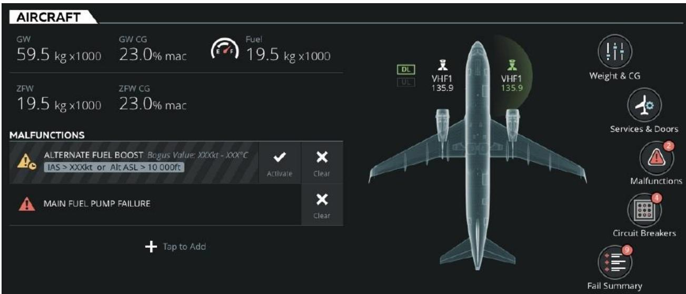
核心定位：飞机选项卡是教员快速设置飞机初始条件、控制和监控飞机参数、管理通信导航、执行地面服务、触发故障及监控飞机状态的核心入口。涵盖重量与平衡、燃油、数据链、通信、舱门服务、故障与断路器等全部飞机相关功能。
1.1 功能层级结构
1.2 界面结构
下方表格中的位置描述基于图 1（AIRCRAFT Tab 整体界面）实际截图分析得出。
| 区域/控件 | 位置 | 功能说明 |
|---|---|---|
| 参数输入文本字段区 Parameter Input Text Fields | 主区域（上半部分） | 集中显示飞机重量与平衡相关参数，每个字段可点击弹出对应键盘或使用滚轮选择器 |
| 总重 GW Gross Weight | 参数区第一行 | 显示飞机总重，点击弹出总重键盘；支持滚轮选择器 |
| 总重重心 GW CG GW Center of Gravity | 参数区第二行 | 显示总重重心（% MAC），点击弹出总重重心键盘；支持滚轮选择器 |
| 零燃油重量 ZFW Zero Fuel Weight | 参数区第三行 | 显示零燃油重量，点击弹出 ZFW 键盘；支持滚轮选择器 |
| ZFW CG ZFW Center of Gravity | 参数区第四行 | 显示零燃油重量重心（% MAC），点击弹出 ZFW CG 键盘；支持滚轮选择器 |
| 燃油 FUEL Fuel Weight | 参数区第五行 | 显示总燃油量，点击弹出燃油键盘；支持滚轮选择器 |
| 快速访问按钮区 Quick Access Buttons | 主区域（中部） | 一排快捷按钮，点击后弹出对应滑动面板，部分按钮显示状态指示灯或红色标记 |
| 故障部分 Malfunction Section | 主区域（底部） | 显示激活和预位故障摘要，提供清除和激活操作 |
二、核心功能详解
2.1 参数输入文本字段速览（Parameter Input Text Fields）
飞机选项卡主区域上半部分集中显示 5 个重量与平衡相关参数。所有参数均支持键盘输入和滚轮选择器两种修改方式。
| 参数 | 功能定义 | 交互方式 | 与其他功能关系 |
|---|---|---|---|
| 总重 GW | 以所选单位（千克/磅 x1000）显示飞机总重 | 点击弹出总重键盘，或使用滚轮选择器（详见 2.5 重量与平衡滑动面板） | 与 ZFW、燃油动态联动；修改 GW 时 ZFW 自动调整，若超出限制则燃油自动调整 |
| 总重重心 GW CG | 以 % MAC 显示总重重心 | 点击弹出总重重心键盘，或使用滚轮选择器（详见 2.5） | 与 ZFW CG 动态联动；修改 GW CG 时 ZFW CG 自动调整，若超出限制则燃油减少、ZFW 增加 |
| 零燃油重量 ZFW | 以所选单位（千克/磅 x1000）显示零燃油重量 | 点击弹出 ZFW 键盘，或使用滚轮选择器（详见 2.5） | 与 GW、燃油动态联动；修改 ZFW 时 GW 自动变化，若超出限制则燃油自动调整 |
| ZFW CG | 以 % MAC 显示零燃油重量重心 | 点击弹出 ZFW CG 键盘，或使用滚轮选择器（详见 2.5） | 与 GW CG 动态联动；修改 ZFW CG 时 GW CG 自动变化 |
| 燃油 FUEL | 以所选单位（千克/磅 x1000）显示飞机总燃油量 | 点击弹出燃油键盘，或使用滚轮选择器（详见 2.5） | 与 GW、ZFW 动态联动；修改燃油时 GW 自动变化，若超出限制则 ZFW 自动调整；燃油按飞机燃油分配计划分配 |
滚轮选择器通用操作：长按参数直至滚轮选择器显示，或向上/向下滑动参数呼出滚轮。滚动选择后，点击绿色勾号确认，或点击红色 X 取消。
总重键盘显示当前总重量，并允许教员通过键盘或滑块输入另一个总重值。
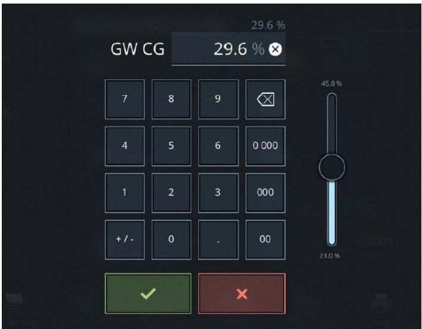
总重重心键盘显示当前总重量重心（GW CG），并允许教员通过键盘或滑块输入另一个总重重心值。
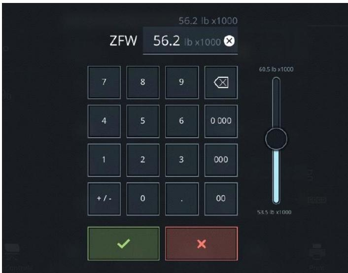
零燃油重量键盘显示当前零燃油重量（ZFW），并允许教员通过键盘或滑块输入另一个零燃油重量值。
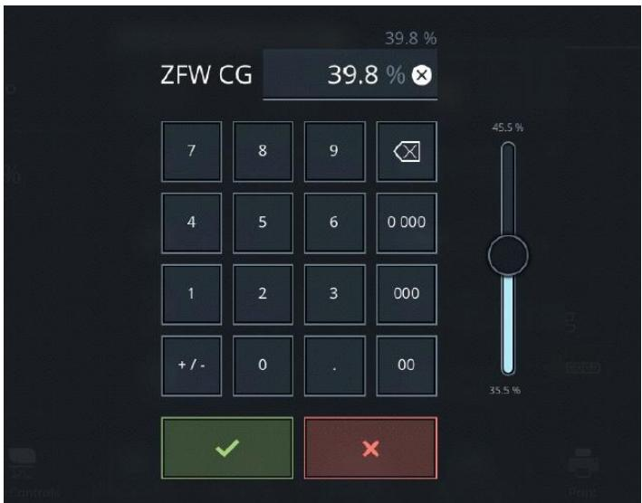
零燃油重量重心键盘显示当前零燃油重量重心（ZFW CG），并允许教员通过键盘或滑块输入另一个零燃油重量重心值。
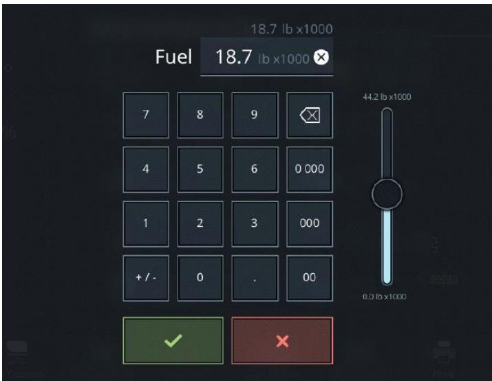
燃油键盘显示当前燃油重量，并允许教员通过键盘或滑块输入另一个燃油重量值。
2.2 快速访问按钮速览（Quick Access Buttons）
| 按钮 | 功能定义 | 呈现方式 | 交互方式 |
|---|---|---|---|
| DL 数据链（Data Link） | 显示数据链下行消息状态 | 当有来自机组的下行消息时，按钮亮起绿色 | 点击弹出数据链滑动面板（详见 2.3） |
| UL 上行链路（Uplink） | 显示上行链路消息状态 | 当有教员发送给机组的上行消息时，按钮亮起橙色 | 点击弹出数据链滑动面板（详见 2.3） |
| VHF 通信（VHF Comm） | 显示飞行员/副驾驶无线电通信状态和调谐频率 | 机组讲话时，飞行员/副驾驶图标旁显示绿色发射波 | 点击弹出通信滑动面板（详见 2.4） |
| 重量与重心（Weight & CG） | 快速访问重量与平衡设置 | 标准按钮 | 点击弹出重量与平衡滑动面板（详见 2.5） |
| 服务与舱门（Services & Doors） | 快速访问地面服务和舱门控制 | 标准按钮 | 点击弹出服务与舱门滑动面板（详见 2.6） |
| 故障（Malf） | 快速访问故障预选和激活 | 按钮上红色标记表示已激活和待处理的故障数量 | 点击弹出故障滑动面板（详见 2.7） |
| 断路器（CB） | 快速访问断路器控制 | 按钮上红色标记表示跳闸/弹出的断路器数量 | 点击弹出断路器滑动面板（详见 2.8） |
| 故障总结（Malf Summary） | 快速访问所有故障和断路器的总体状态 | 按钮上红色标记表示故障总结中包含的故障数量 | 点击弹出故障总结滑动面板（详见 2.9） |
2.3 数据链（DL/UL）滑动面板（Data Link Sliding Panel）
数据链滑动面板允许教员向模拟飞机发送上行消息、显示模拟飞机与地面站之间的通信、查看并回复来自模拟飞机的消息，以及控制 ATC 和 ADS 连接。
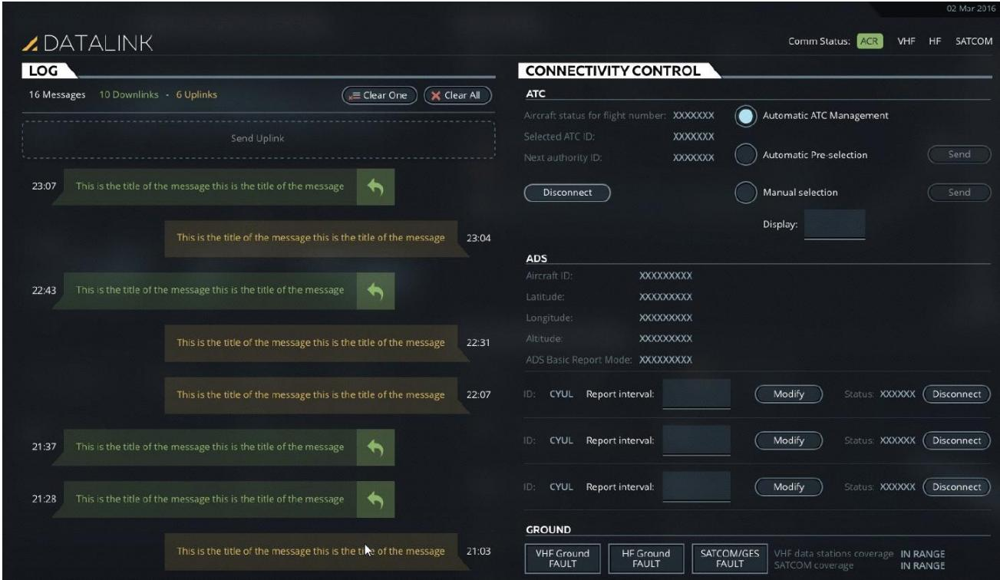
| 属性 | 说明 |
|---|---|
| 触发方式 | 点击主界面 DL 或 UL 快速访问按钮弹出 |
| 面板结构 | 包含两个一级选项卡：日志（Log）、连接控制（Connection Control） |
| 日志选项卡（Log） | 显示模拟飞机与地面站之间的通信历史，最新消息始终显示在页面顶部。底部包含三个操作按钮：清除一条、清除全部、发送上行链路 |
| 连接控制选项卡（Connection Control） | 提供 ATC 和 ADS 中心的连接/断开控制，包含 ATC 部分、ADS 部分、地面部分 |
2.3.1 日志选项卡内嵌功能 — 新上行链路（New Uplink）
在日志选项卡底部点击发送上行链路按钮后，当前视图切换为新上行链路选项卡（New Uplink Tab），允许教员组装并发送上行消息。该子页面包含以下四部分：
| 属性 | 说明 |
|---|---|
| 组（Group） | 列出所有上行链路消息的分组类别 |
| 场景（Scenario） | 列出所选组内的所有消息类别，点击场景按钮可查看该类别下的上行链路消息 |
| 场景消息（Scene Message） | 列出所选场景（类别）下所有可用的上行链路消息 |
| 消息编辑器（Message Editor） | 显示已选的上行链路消息，允许教员设置时间、高度等参数，并控制消息发送顺序 |
| 添加按钮（Add） | 点击上行链路消息旁的添加按钮，将该消息加入消息编辑器 |
| 移除按钮（Remove） | 点击消息编辑器中消息旁的移除按钮，将该消息从编辑器中移除 |
| ▲ / ▼ 按钮（Up / Down） | 调整消息编辑器中消息的优先级顺序，决定发送给机组的先后顺序 |
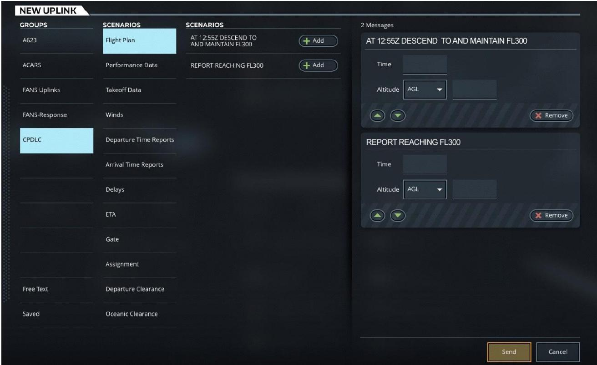
2.3.2 连接控制选项卡（Connection Control Tab）
连接控制选项卡提供连接/断开与 ATC 和 ADS 中心的控制功能，并显示地面通信状态。面板自上而下分为三个区域：ATC、ADS、地面。
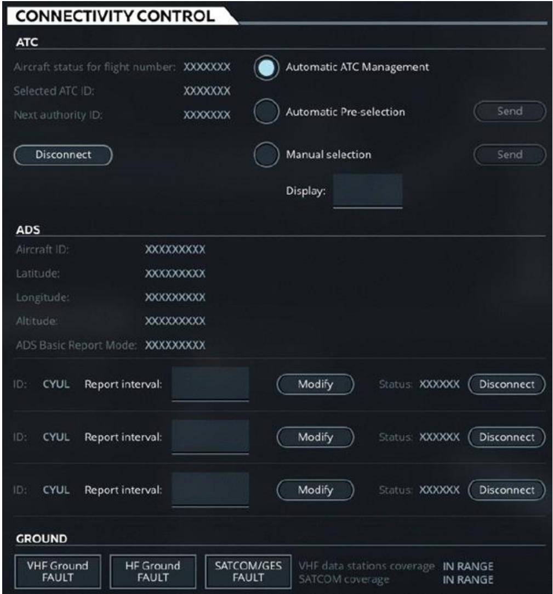
2.3.2.1 ATC 部分（ATC Section）
本节主要由只读字段和单选按钮组成。
| 属性 | 说明 |
|---|---|
| 只读字段（RO Fields） | 显示当前 ATC 连接航班号、活动 ATC ID 和下一个权限 ID |
| 自动 ATC 管理（Auto ATC Management） | 数据权限转移由地面站模拟自动处理，无需教员操作 |
| 自动预选（Auto Preselect） | 软件建议下一个权限，教员点击发送即可启动转移 |
| 手动选择（Manual Select） | 教员通过显示的输入字段手动选择下一个权限 |
| 断开按钮（Disconnect） | 点击断开当前活动的 ATC 连接，弹出确认菜单 |
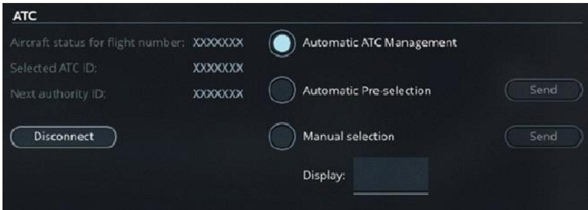
2.3.2.2 ADS 部分（ADS Section）
自动相关监视（ADS）部分显示 ADS 信息并控制 ADS 连接，包括只读字段和一个 ADS 中心 ID 列表。
| 属性 | 说明 |
|---|---|
| 只读字段（RO Fields） | 显示最近一次接收到的 ADS 报告：飞机 ID、纬度、经度、高度、ADS 基本报告模式 |
| ADS 中心 ID 列表（ADS Center ID List） | 列出所有 ADS 中心 ID 及其相关控件 |
| ID | 显示 ADS 中心 ID |
| 报告间隔（Report Interval） | 显示 ADS 报告间隔 |
| 修改（Modify） | 点击可修改 ADS 报告间隔 |
| 状态（Status） | 显示 ADS 连接的状态 |
| 连接/断开（Connect / Disconnect） | 点击可发起或断开 ADS 连接 |
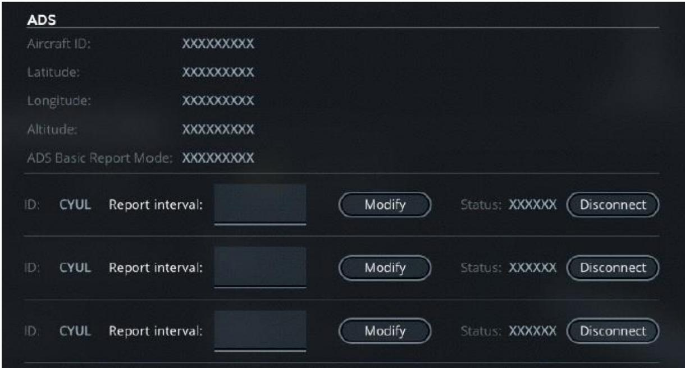
2.3.2.3 地面部分（Ground Section）
此部分提供地面通信的状态，并允许教员触发通信故障。
| 属性 | 说明 |
|---|---|
| VHF 地面故障（VHF Ground Fault） | 切换按钮：正常状态点击触发与 VHF 地面站的数据链通信故障；激活状态点击清除故障并返回正常 |
| HF 地面故障（HF Ground Fault） | 切换按钮：正常状态点击触发与 HF 地面站的数据链通信故障；激活状态点击清除故障并返回正常 |
| SATCOM/GES 故障（SATCOM/GES Fault） | 切换按钮：正常状态点击触发与 SATCOM 地面站的数据链通信故障；激活状态点击清除故障并返回正常 |
2.3.3 数据链操作流程（Data Link Flow）
2.4 通信滑动面板（Communication Sliding Panel）
通信滑动面板允许教员建立 VHF/HF 无线电通信、与内部通信系统（ICS）通信、收听无线电导航信号、选择各种通信模式。
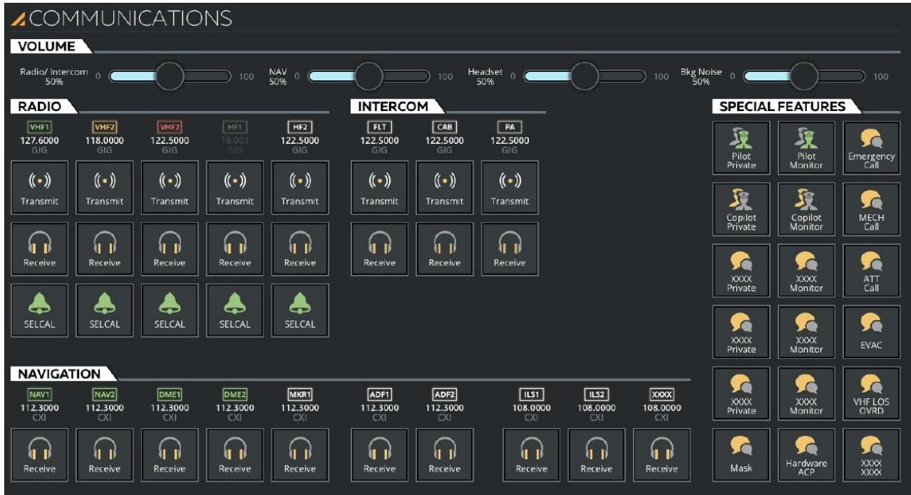
| 属性 | 说明 |
|---|---|
| 触发方式 | 点击主界面 VHF 快速访问按钮弹出 |
| 面板结构 | 包含五个选项卡：音量（Volume）、无线电（Radio）、内部通话（Intercom）、导航（Navigation）、特殊功能（Special Features） |
| 音量选项卡（Volume） | 通过滑块控制无线电/内部通话耳机音频、导航音频信号、耳机音频、背景噪音音量，范围从最小值到最大值 |
| 无线电选项卡（Radio） | 显示所有可用 VHF 和 HF 电台，每个电台包含电台名称、所选频率、调谐地面站类型。每个电台有三个按钮：发射（Transmit）、接收（Receive）、SELCAL |
| 内部通话选项卡（Intercom） | 允许教员与 ICS 通信，包括驾驶舱（FLT）、客舱（CAB）、旅客广播（PA）。每个 ICS 包含发射和接收按钮；若无线电发射机无电源，发射按钮禁用 |
| 导航选项卡（Navigation） | 允许监听 NAV、DME、Marker Beacon、ADF、ILS 信号。每个导航接收机显示接收机名称、调谐频率、接收台站名称 |
| 特殊功能选项卡（Special Features） | 提供私密通信、通信监听、各类呼叫及硬件控制功能（详见 2.4.1） |
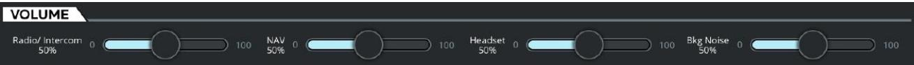
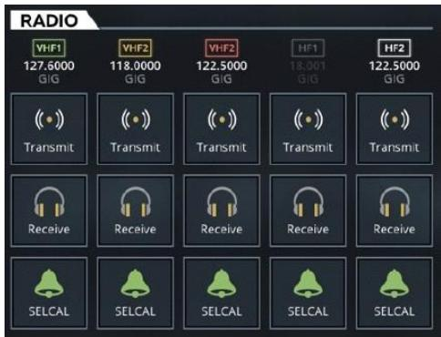
2.4.1 特殊功能选项卡（Special Features Tab）
特殊功能选项卡允许教员选择各种通信模式，如私密通信和通信监听，以及其他各种类型的呼叫。
| 按钮 | 说明 |
|---|---|
| 机长私密（Pilot Private） | 点击可在教员与机长之间建立私密通信 |
| 副驾驶私密（Copilot Private） | 点击可在教员与副驾驶之间建立私密通信 |
| 机长监听（Pilot Monitoring） | 点击可监听机长的通信 |
| 副驾驶监听（Copilot Monitor） | 点击可监听副驾驶的通信 |
| 紧急呼叫（Emergency Call） | 点击可模拟教员在驾驶舱内发起紧急呼叫 |
| 机械师呼叫（MECH Call） | 点击可模拟教员以机械师（MECH）身份向驾驶舱机组发起呼叫 |
| 乘务员呼叫（ATT Call） | 点击可模拟教员以乘务员（ATT）身份向驾驶舱机组发起呼叫 |
| 撤离（EVAC） | 点击可在驾驶舱内触发撤离（EVACuation）注意信号 |
| 面罩（Mask） | 点击可在驾驶舱烟雾模拟期间激活教员面罩中的麦克风 |
| 硬件 ACP（Hardware ACP） | 开关按钮：激活/停用教员站音频控制面板（ACP） |
| VHF LOS OVRD | 允许通信，无论飞机与调谐地面站之间的视距（LOS）或传播衰减情况如何。 选中：教员 VHF 无线电被视为机载设备，与驾驶舱机组 VHF 相同。 取消选中：根据模拟飞机与调谐地面站之间的距离和高度进行计算，以真实模拟空对地通信。 |
2.4.2 通信功能选择流程（Comm Feature Flow）
2.5 重量与平衡滑动面板（Weight & Balance Sliding Panel）
重量与平衡滑动面板允许教员快速配置飞机重量。它包含所有必要的控制功能，可快速将飞机设置为预定义重量、调整零燃油重量、调整燃油重量、管理每个燃油箱的燃油重量。
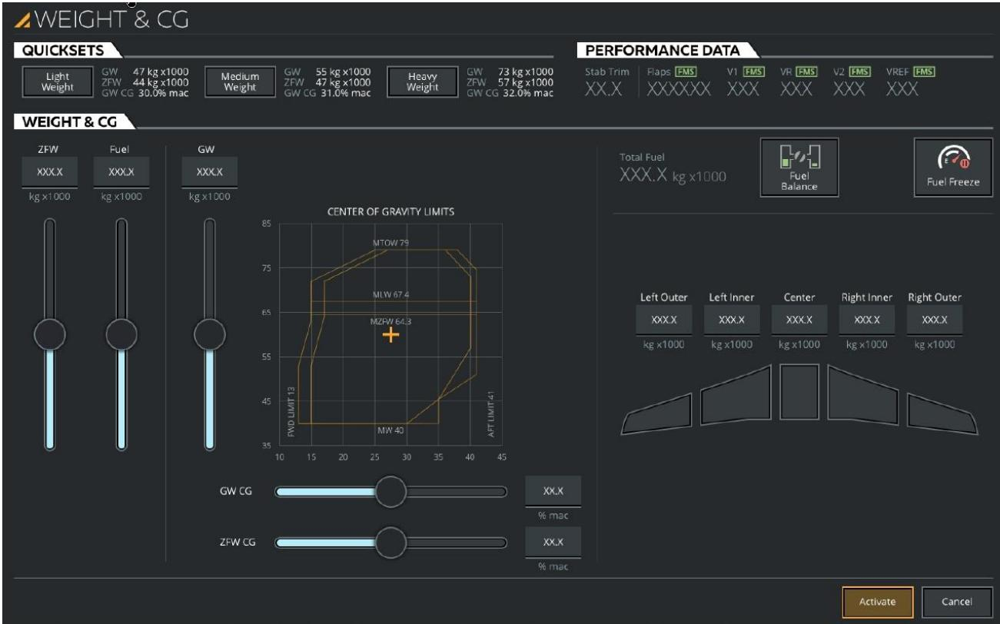
此滑动面板包含三个主要选项卡：
- 快速设置（Quick Set）
- 性能数据（Performance Data）
- 重量与重心（Weight & CG）
2.5.1 快速设置选项卡（Quick Set Tab）
快速设置选项卡允许教员将飞机设置为预定义的飞机重量。每个设置包括总重（GW）值、零燃油重量（ZFW）和总重重心（GW CG）。此选项卡包含三个互斥按钮：
| 按钮 | 说明 |
|---|---|
| 轻重量（Light） | 将飞机设置为预定义的轻重量配置（含 GW、ZFW、GW CG） |
| 中重量（Medium） | 将飞机设置为预定义的中重量配置（含 GW、ZFW、GW CG） |
| 重重量（Heavy） | 将飞机设置为预定义的重重量配置（含 GW、ZFW、GW CG） |
2.5.2 性能数据选项卡（Performance Data Tab）
性能数据选项卡包含只读字段，提供各种飞行控制设置和飞机速度的状态。
| 字段 | 说明 |
|---|---|
| 安定面配平（Stab Trim） | 显示安定面配平调整设置 |
| 襟翼（Flaps） | 显示驾驶舱中襟翼手柄的位置 |
| V1 | 显示 V1 速度；速度旁 FMS 标志表示速度来自飞行管理系统（FMS） |
| VR | 显示 VR 速度；速度旁 FMS 标志表示速度来自 FMS |
| V2 | 显示 V2 速度；速度旁 FMS 标志表示速度来自 FMS |
| VREF | 显示 VREF 速度；速度旁 FMS 标志表示速度来自 FMS |
2.5.3 重量与重心选项卡（Weight & CG Tab）
重量与重心选项卡允许教员调整飞机的零燃油重量（ZFW）、燃油、总重（GW）、总重重心（GW CG）、零燃油重量重心（ZFW CG），并执行燃油管理功能。
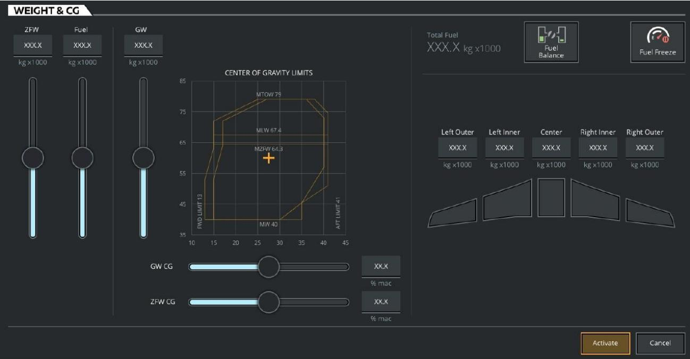
2.5.3.1 主重量参数调整
以下五个主参数均支持两种方式即时调整：输入文本字段或滑块控制。调整任一参数会自动联动其他参数，若新值超出批准数据限制，系统自动调整燃油或 ZFW 以保持合规（动态最小/最大值）。
| 参数 | 详细说明 |
|---|---|
| 零燃油重量 ZFW （Zero Fuel Weight） | 单位：千克/磅 ×1000 调整方式：① 点击输入文本字段，显示键盘后手动输入特定值；② 使用滑块控制。 联动行为：调整 ZFW 后自动产生新的总重量 GW；若新 GW 超出经批准数据限制，燃油重量会自动调整以保持合规。 |
| 燃油 Fuel | 单位：千克/磅 ×1000 调整方式：① 点击输入文本字段，显示键盘后手动输入特定值；② 使用滑块控制。 联动行为：调整燃油后自动产生新的总重量 GW；若新 GW 超出限制，ZFW 会自动调整。注意：燃油按飞机燃油分配计划自动分配到各油箱。 |
| 总重量 GW （Gross Weight） | 单位：千克/磅 ×1000 调整方式：① 点击输入文本字段，显示键盘后手动输入特定值；② 使用滑块控制。 联动行为：调整 GW 后自动产生新的 ZFW；若新 ZFW 超出限制，燃油重量会自动调整以保持合规。 |
| 总重重心 GW CG （GW Center of Gravity） | 单位：% MAC 调整方式：① 点击输入文本字段，显示键盘后手动输入特定值；② 使用滑块控制。 联动行为：调整 GW CG 后自动产生新的零燃油重量重心 ZFW CG；若新 ZFW CG 超出限制，系统会减少燃油重量并增加 ZFW 以保持合规。 |
| 零燃油重量重心 ZFW CG （ZFW Center of Gravity） | 单位：% MAC 调整方式：① 点击输入文本字段，显示键盘后手动输入特定值；② 使用滑块控制。 联动行为：调整 ZFW CG 后自动产生新的总重重心 GW CG；若新 GW CG 超出限制，系统会减少燃油重量并增加 ZFW 以保持合规。 |
2.5.3.2 燃油管理（Fuel Management）
支持对五个燃油箱进行单独油量调整，以及燃油平衡和燃油冻结功能。各油箱均支持文本输入或滑块控制，调整后自动联动总重和 ZFW。
| 功能 | 详细说明 |
|---|---|
| 左外侧燃油箱 （Left Outer） | 单位：千克/磅 ×1000 调整方式：① 点击输入文本字段，显示键盘后手动输入特定值；② 使用滑块控制。 联动行为：调整后自动产生新的总重 GW；若新 GW 超出限制，ZFW 会自动调整。 |
| 左内侧燃油箱 （Left Inner） | 单位：千克/磅 ×1000 调整方式：① 点击输入文本字段，显示键盘后手动输入特定值；② 使用滑块控制。 联动行为：调整后自动产生新的总重 GW；若新 GW 超出限制，ZFW 会自动调整。 |
| 右外侧燃油箱 （Right Outer） | 单位：千克/磅 ×1000 调整方式：① 点击输入文本字段，显示键盘后手动输入特定值；② 使用滑块控制。 联动行为：调整后自动产生新的总重 GW；若新 GW 超出限制，ZFW 会自动调整。 |
| 右内侧燃油箱 （Right Inner） | 单位：千克/磅 ×1000 调整方式：① 点击输入文本字段，显示键盘后手动输入特定值；② 使用滑块控制。 联动行为：调整后自动产生新的总重 GW；若新 GW 超出限制，ZFW 会自动调整。 |
| 中央燃油箱 （Center） | 单位：千克/磅 ×1000 调整方式：① 点击输入文本字段，显示键盘后手动输入特定值；② 使用滑块控制。 联动行为：调整后自动产生新的总重 GW；若新 GW 超出限制，ZFW 会自动调整。 |
| 燃油平衡 （Fuel Balance） | 操作按钮。点击后平衡所有油箱油量。平衡进行时按钮亮起，完成后返回正常状态。 |
| 燃油冻结 （Fuel Freeze） | 切换按钮。正常状态点击激活燃油冻结；激活状态点击停用。 激活时所有飞机仪表继续正常指示（燃油量指示器除外，保持不活动状态），飞机不消耗燃油，但仍可进行加油。重新定位期间按钮禁用，直到重新定位或飞行配平完成。 |
2.5.3.3 重心限制图（CG Envelope Graph）
交互式图表显示飞机的重量与重心运行包线。当前重量和重心由包线内的光标（+）指示。教员可直接触摸并移动包线内的光标，以修改当前的飞机重量和重心。
2.5.3.4 激活与取消（Activate / Cancel）
| 按钮 | 说明 |
|---|---|
| 激活（Activate） | 执行新的重量和重心选择。未选择任何更改时禁用 |
| 取消（Cancel） | 取消选定的重量和重心值。未选择任何更改时禁用 |
2.5.4 重量调整联动流程（Weight Adjustment Flow）
2.6 服务与舱门滑动面板（Services & Doors Sliding Panel）
服务与舱门滑动面板允许教员执行地面服务操作、打开和关闭各种飞机舱门、模拟驾驶舱门禁请求。
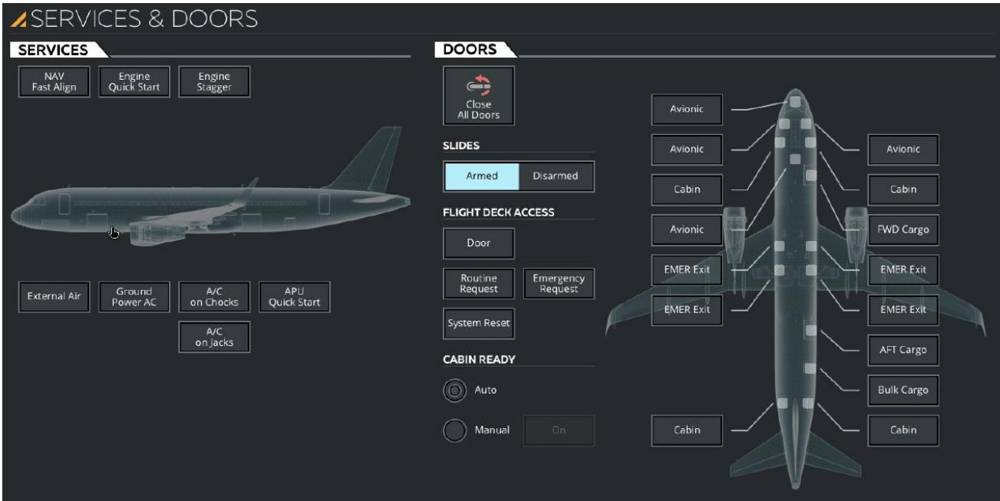
| 属性 | 说明 |
|---|---|
| 触发方式 | 点击主界面"服务与舱门"快速访问按钮弹出 |
| 面板结构 | 包含两个选项卡：服务（Service）、舱门（Doors） |
2.6.1 服务选项卡（Service Tab）
服务选项卡包含所有必要的按钮，允许教员快速执行某些地面服务操作。
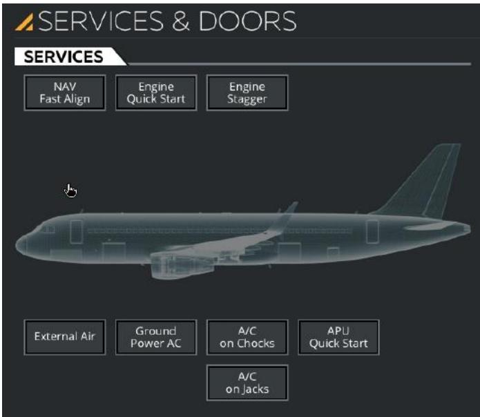
| 按钮 | 功能定义 | 呈现方式/交互方式 | 边界行为/互斥关系 |
|---|---|---|---|
| 导航快速校准 （Quick Align） | 校准参考系统（IRS、INS、AHRS、ADIRS），绕过正常校准周期 | 操作按钮，点击后点亮并保持激活状态 2 秒 | 参考系统已校准或关闭时禁用 |
| 发动机快速启动 （Quick Engine Start） | 启动熄火的发动机 | 操作按钮，保持点亮直到发动机启动 | 仅在有可用燃油且燃油手柄在慢车位时有效；所有发动机运行时禁用 |
| 发动机差异 （Engine Differential） | 启用/禁用发动机差异效果，使某些发动机读数不完全相同（如 EGT），增加模拟真实感 | 切换按钮 | — |
| 外部气源 （External Pneumatic） | 连接/断开外部气源地面供气 | 切换按钮：正常状态点击连接，激活状态点击断开 | 飞机开始移动时自动断开；飞机移动时按钮禁用 |
| 地面交流电源 （Ground AC Power） | 激活/停用外部交流电源 | 切换按钮：正常状态点击激活，激活状态点击停用 | 飞机开始移动时自动断开；飞机移动时按钮禁用 |
| 飞机轮挡 （Chocks） | 放置/移除飞机轮挡。轮挡放置时飞机不会移动 | 切换按钮：正常状态点击放置，激活状态点击移除 | 飞机移动时禁用。与飞机顶升互斥 |
| 飞机顶升 （Jacked） | 将飞机置于顶升状态，起落架支柱完全伸展，可收放起落架、施加推力而不会掉落 | 切换按钮：正常状态点击顶升，激活状态点击移除 | 飞机移动时禁用。与飞机轮挡互斥 |
| APU 快速启动 （Quick APU Start） | 启动 APU，电气和气动输出在 5 秒内可用 | 操作按钮 | APU 运行或未满足条件（主开关打开、断路器闭合、有可用燃油）时禁用 |
2.6.2 舱门选项卡（Doors Tab）
舱门选项卡包含所有必要的按钮，以便教员能够打开和关闭各种飞机舱门、模拟各种驾驶舱门禁请求、控制紧急撤离滑梯。通过打开各种飞机舱门，教员可以训练飞行机组处理驾驶舱内各种舱门指示信号。
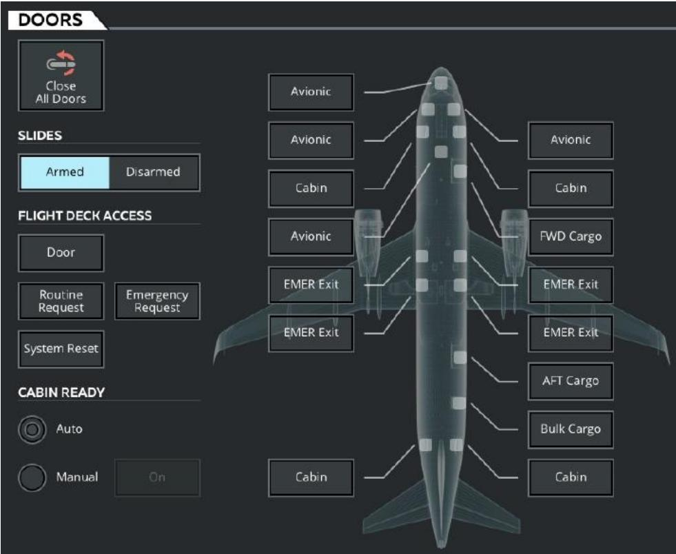
| 属性 | 说明 |
|---|---|
| 面板结构 | 自上而下分为四个部分：飞机舱门按钮、滑梯部分、驾驶舱通道部分、客舱就绪部分 |
2.6.2.1 飞机舱门按钮（Aircraft Door Buttons）
飞机舱门按钮允许教员打开/关闭各种飞机舱门。所有舱门按钮均为切换按钮：正常状态点击打开舱门；激活状态（浅蓝色）点击关闭舱门。
| 按钮 | 功能定义 |
|---|---|
| 关闭所有舱门 （Close All Doors） | 一键打开/关闭所有飞机舱门 |
| 航电设备舱门 （Avionics Doors） | 打开/关闭相应航电设备检修门 |
| 客舱门 — 前左侧 （Cabin Fwd Left） | 打开/关闭前部左侧乘客/机组客舱门 |
| 客舱门 — 前右侧 （Cabin Fwd Right） | 打开/关闭前部右侧乘客/机组客舱门 |
| 客舱门 — 后左侧 （Cabin Aft Left） | 打开/关闭后部左侧乘客/机组客舱门 |
| 客舱门 — 后右侧 （Cabin Aft Right） | 打开/关闭后部右侧乘客/机组客舱门 |
| 紧急出口 — 左侧 （Emergency Exit Left） | 打开/关闭左侧机翼上方紧急出口门 |
| 紧急出口 — 右侧 （Emergency Exit Right） | 打开/关闭右侧机翼上方紧急出口门 |
| 前货舱 （FWD Cargo） | 打开/关闭前货舱门 |
| 后货舱 （AFT Cargo） | 打开/关闭后货舱门 |
| 散装货物 （Bulk Cargo） | 打开/关闭散货舱门 |
2.6.2.2 滑梯部分（Slides Section）
滑梯部分包含两个互斥按钮，用于预位或解除所有应急撤离滑梯。
| 按钮 | 功能定义 | 互斥关系 |
|---|---|---|
| 预位所有滑梯 （Arm All Slides） | 所有应急撤离滑梯已预位 | 与"解除所有滑梯"互斥 |
| 解除所有滑梯 （Disarm All Slides） | 所有应急撤离滑梯已解除预位 | 与"预位所有滑梯"互斥 |
2.6.2.3 驾驶舱通道部分（Cockpit Access Section）
此部分包含按钮，允许教员训练飞行员如何操作与驾驶舱通道门相关的航电仪器或设备。在此部分中，教员可以模拟锁定驾驶舱通道门、乘务员试图进入驾驶舱等场景。
| 按钮 | 功能定义 | 呈现方式/交互方式 | 边界行为 |
|---|---|---|---|
| 门 （Door） | 打开/关闭驾驶舱通道门 | 切换按钮：正常状态点击打开，激活状态点击关闭 | — |
| 常规请求 （Routine Request） | 模拟驾驶舱通道门的常规进入请求 | 操作按钮，选中后保持激活状态 2 秒 | 若驾驶舱门键盘停用或系统控制器断电则禁用 |
| 紧急请求 （Emergency Request） | 模拟驾驶舱通道门的紧急进入请求 | 操作按钮，选中后保持激活状态 2 秒 | 若驾驶舱门键盘停用或系统控制器断电则禁用 |
| 系统重置 （System Reset） | 重置驾驶舱门进入系统 | 操作按钮，选中后保持激活状态 2 秒 | 若驾驶舱门键盘停用或系统控制器断电则禁用 |
2.6.2.4 客舱就绪部分（Cabin Ready Section）
客舱就绪部分包含两个互斥单选按钮，用于激活客舱就绪自动或手动模式。
| 按钮 | 功能定义 | 互斥关系 |
|---|---|---|
| 自动模式 （Auto Mode） | 默认模式，客舱就绪状态由系统自动控制 | 与"手动模式"互斥 |
| 手动模式 （Manual Mode） | 选择后教员可在 ECAM/EICAS 显示单元（DU）上显示客舱就绪指示 | 与"自动模式"互斥 |
2.6.3 服务与舱门操作流程（Services & Doors Flow）
2.7 故障滑动面板（Malfunction Sliding Panel）
故障滑动面板允许教员预选并激活模拟中的故障。故障可分为两种类型：激活（红色标志）和预位（黄色标志）。激活和预位故障同时显示在控制板故障部分、控制板页脚、地图工作区标题以及故障滑动面板中。
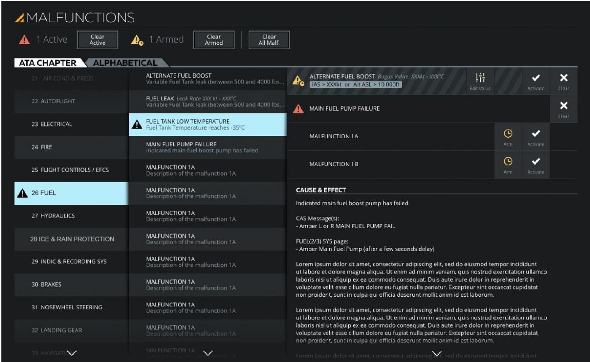
| 属性 | 说明 |
|---|---|
| 触发方式 | 点击主界面"故障"快速访问按钮弹出；或点击主界面故障部分的"点击添加"按钮 |
| 面板结构 | 包含四个部分：状态部分（Status）、ATA章节选项卡（ATA Chapters）、字母顺序选项卡（Alphabetical）、飞行阶段选项卡（Flight Phase） |
2.7.1 状态部分（Status Section）
状态部分提供模拟中激活和预位故障的摘要，并提供清除激活和/或预位故障或清除所有故障的操作能力。
| 按钮 | 功能定义 | 呈现方式/交互方式 |
|---|---|---|
| 清除激活 （Clear Active） | 清除所有当前已激活的故障 | 操作按钮 |
| 清除预位 （Clear Armed） | 清除所有当前已预位的故障 | 操作按钮 |
| 清除所有故障 （Clear All） | 同时清除所有激活和预位的故障 | 操作按钮 |
2.7.2 ATA章节选项卡（ATA Chapters Tab）
ATA章节选项卡提供按ATA章节编号排序的飞机系统列表。教员可查看 IOS 上特定ATA章节的所有可用故障。
| 属性 | 说明 |
|---|---|
| 功能定义 | 按ATA章节编号排序的飞机系统列表 |
| 警告标志 — 黄色 （Yellow Flag） | ATA系统仅有预位故障 |
| 警告标志 — 红色 （Red Flag） | ATA系统有激活故障，或同时有多个预位故障和至少一个激活故障 |
2.7.3 字母顺序选项卡（Alphabetical Tab）
字母顺序选项卡提供按字母顺序排序的飞机系统列表。教员可查看 IOS 上特定飞机系统的所有可用故障。警告标志含义同 ATA章节选项卡。
| 属性 | 说明 |
|---|---|
| 功能定义 | 按字母顺序排序的飞机系统列表 |
| 警告标志 — 黄色 （Yellow Flag） | 系统仅有预位故障 |
| 警告标志 — 红色 （Red Flag） | 系统有激活故障，或同时有多个预位和至少一个激活故障 |
2.7.4 飞行阶段选项卡（Flight Phase Tab）
飞行阶段选项卡是一个可选功能，提供按飞行阶段分组的故障列表。
| 属性 | 说明 |
|---|---|
| 功能定义 | 按飞行阶段分组故障列表（可选功能） |
2.7.5 激活与预位故障（Activate/Arm Malfunction）
要激活或预位故障，请按以下步骤操作：
- 通过ATA章节或字母顺序选择飞机系统。
- 为所选飞机系统选择所需故障。
- 显示故障面板，包含必要的控制选项。
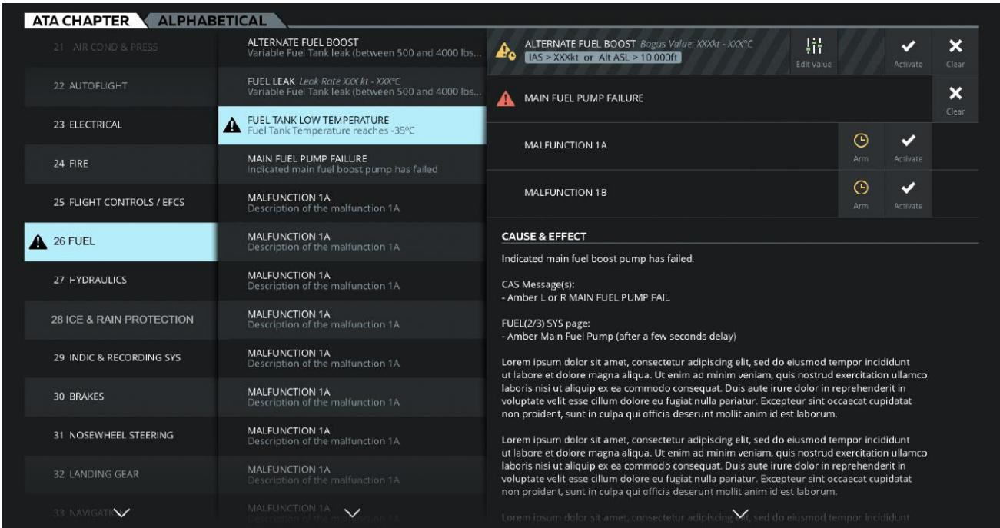
| 按钮/控件 | 功能定义 | 呈现方式/交互方式 |
|---|---|---|
| 激活 （Activate） | 立即触发所选故障 | 操作按钮 |
| 清除 （Clear） | 停用并清除所选故障 | 操作按钮 |
| 编辑数值 （Edit Value） | 更改故障判据的数值 | 点击后显示键盘，允许手动输入新数值 |
| 布防 （Arm） | 显示布防判据滑动面板，允许选择故障触发条件。选择判据后布防按钮变为可用 | 操作按钮，选择判据前禁用 |
| 因果部分 （Cause & Effect） | 提供故障因果关系的描述 | 只读文本区域 |
2.7.6 布防判据滑动面板（Arm Criteria Sliding Panel）
此滑动面板提供与所选故障相关的判据或条件列表。它允许教员选择哪些判据将用于布防故障。当满足这些判据时，故障将在模拟训练中触发。所选判据的摘要会重复显示在"布防"按钮旁边。
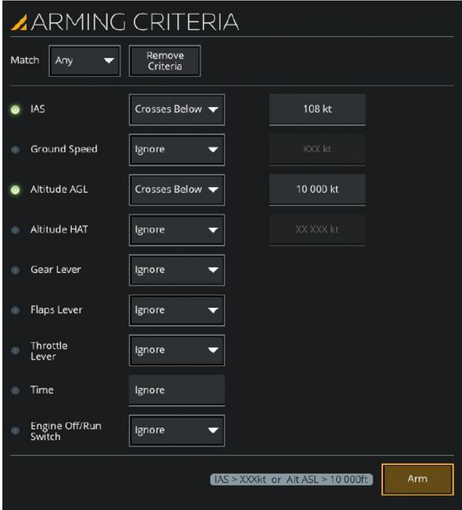
| 属性 | 说明 |
|---|---|
| 功能定义 | 提供与所选故障相关的判据或条件列表 |
| 交互方式 | 教员勾选或选择判据条件；满足判据时故障自动触发 |
| 摘要显示 | 所选判据的摘要重复显示在"布防"按钮旁边 |
| 布防按钮状态 | 未选择判据时禁用；选择至少一个判据后变为可用 |
2.7.7 故障操作流程（Malfunction Flow）
2.8 断路器滑动面板（Circuit Breaker Sliding Panel）
断路器滑动面板允许教员按飞机系统分别跳开和弹出各种硬件和软件断路器（CBs）。
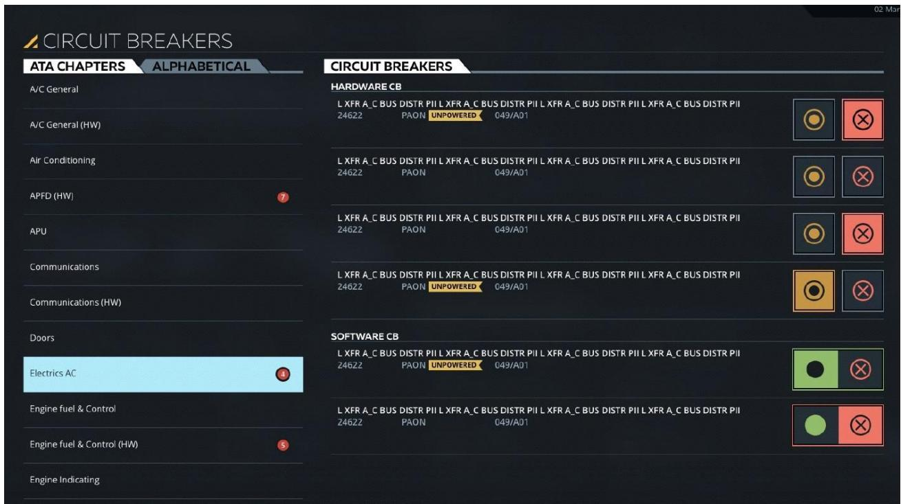
| 属性 | 说明 |
|---|---|
| 触发方式 | 点击主界面"断路器"快速访问按钮弹出 |
| 面板结构 | 包含三个选项卡：ATA章节（ATA Chapters）、字母顺序（Alphabetical A-Z）、断路器（CB） |
2.8.1 ATA章节选项卡（ATA Chapters Tab）
ATA章节选项卡提供按ATA章节编号排序的飞机系统列表。教员可在此选项卡中按系统查看 IOS 上所有可用的断路器（CBs）。
| 属性 | 说明 |
|---|---|
| 功能定义 | 按 ATA 章节编号排序的飞机系统列表 |
| 红色徽章 （Red Badge） | 系统旁显示的红色徽章表示该系统上跳开/弹出的断路器数量 |
2.8.2 字母顺序选项卡（Alphabetical Tab）
字母顺序选项卡提供按字母顺序排序的飞机系统列表。教员可在此选项卡中按系统查看 IOS 上所有可用的断路器（CBs）。红色徽章含义同 ATA 章节选项卡。
| 属性 | 说明 |
|---|---|
| 功能定义 | 按字母顺序（A-Z）排序的飞机系统列表 |
| 红色徽章 （Red Badge） | 系统旁红色徽章表示该系统上跳开/弹出的断路器数量 |
2.8.3 断路器选项卡（CB Tab）
断路器选项卡显示所有硬件和软件 CB 的状态。此选项卡分为两个部分：硬件 CB 和软件 CB。
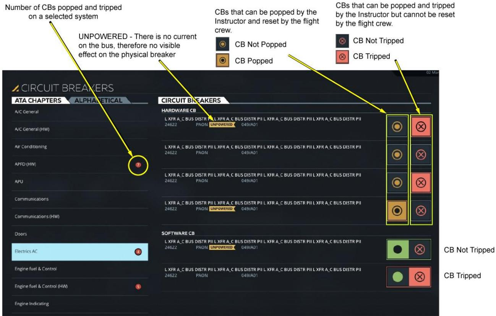
| 属性 | 说明 |
|---|---|
| 硬件 CB 类型 1 （Hardware CB Type 1） | 可由教员弹出、由飞行机组复位的断路器 |
| 硬件 CB 类型 2 （Hardware CB Type 2） | 可由教员弹出和跳开、但不可由飞行机组复位的断路器 |
| 软件 CB （Software CB） | 无法由飞行机组复位 |
| 断电标志 （Power Off Flag） | 表示总线上无电流 |
2.8.3.1 硬件 CB 状态图标（Hardware CB Status Icons）
| 状态 | 说明 |
|---|---|
| 未弹出 | 断路器处于正常闭合状态 |
| 教员触发跳闸（可复位） | 教员弹出断路器，飞行机组可以复位 |
| 未跳闸 | 断路器未被触发 |
| 教员触发跳闸（不可复位） | 教员跳开断路器，飞行机组无法复位 |
2.8.3.2 软件 CB 状态图标（Software CB Status Icons）
| 状态 | 说明 |
|---|---|
| 未跳闸 | 软件断路器处于正常状态 |
| 已跳闸 | 软件断路器已被触发 |
2.8.4 硬件断路器状态流转（Hardware CB State Transition）
2.8.5 断路器操作流程（CB Flow）
2.9 故障总结滑动面板（Malfunction Summary Sliding Panel）
故障总结滑动面板提供所有激活/预位故障、跳闸断路器、故障无线电台的总体状态，便于教员统一管理和控制训练课程中的所有故障。
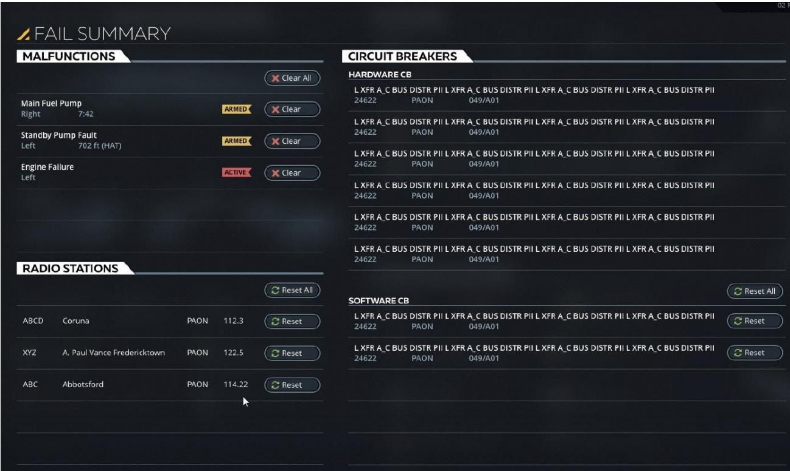
| 属性 | 说明 |
|---|---|
| 触发方式 | 点击主界面"故障总结"快速访问按钮弹出 |
| 面板结构 | 包含三个选项卡：故障（Malfunctions）、断路器（Circuit Breakers）、无线电台（Radio Stations） |
2.9.1 故障选项卡（Malfunctions Tab）
故障选项卡显示所有激活和预位故障的摘要。在此选项卡中，教员可以清除所有激活或预位的故障，或清除单个激活或预位的故障。
| 属性 | 说明 |
|---|---|
| 功能定义 | 显示所有激活和预位故障的摘要 |
| 黄色标志 （Yellow Flag） | 故障已预位，准备在训练课程中触发 |
| 红色标志 （Red Flag） | 故障在训练课程中已激活 |
| 操作能力 | 可清除所有激活或预位故障，或清除单个故障 |
2.9.2 断路器选项卡（Circuit Breakers Tab）
断路器选项卡列出训练课程中所有拔出、跳闸和触发的硬件及软件断路器。
| 属性 | 说明 |
|---|---|
| 功能定义 | 列出所有硬件及软件断路器状态 |
| 操作能力 | 可重置单个断路器或训练课程中的所有断路器 |
2.9.3 无线电台选项卡（Radio Stations Tab）
无线电台选项卡提供训练课程中所有故障无线电台的列表。
| 属性 | 说明 |
|---|---|
| 功能定义 | 提供所有故障无线电台的列表 |
| 操作能力 | 可重置单个无线电台或训练课程中的所有无线电台 |
2.9.4 故障总结操作流程（Malf Summary Flow）
2.10 故障部分（Malfunction Section）
故障部分位于飞机选项卡主界面底部，提供所有激活和预位故障的摘要，并提供快速操作入口。
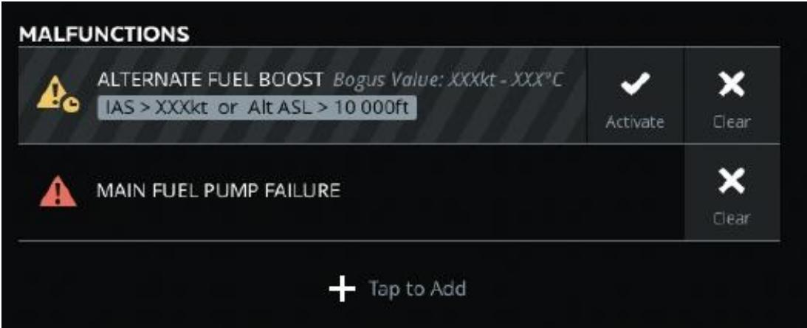
| 属性 | 说明 |
|---|---|
| 位置 | 主区域底部，故障滑动面板的外部速览区域 |
| 功能定义 | 提供所有激活和预位故障的摘要。当有超过四个激活或预位故障时，可进行滚动浏览 |
2.10.1 操作按钮（Operation Buttons）
| 按钮 | 功能定义 | 呈现方式/交互方式 |
|---|---|---|
| 激活 （Activate） | 激活预位的故障 | 操作按钮 |
| 清除 （Clear） | 停用并清除选定的故障 | 操作按钮 |
| 全部清除 （Clear All） | 停用并清除所有已预位或激活的故障 | 操作按钮 |
| 点击添加 （Tap to Add） | 打开故障滑动面板，向模拟中添加新的故障 | 操作按钮 |
2.10.2 故障部分操作流程（Malf Section Flow）
三、全局操作流程与推导
3.1 AIRCRAFT Tab 教员核心操作流程全景图
下图汇总了 Chapter 1 全部子章节（2.2~2.10）的核心操作流程，形成从主界面入口到最终应用生效的完整闭环。教员可从任意入口进入对应模块；每个模块内部的关键决策与操作步骤均在对应纵向 subgraph 中展开。如需查看各面板内部更详细的字段属性与边界行为，请参见对应子章节的横向流程图（2.3.3、2.4.2、2.5.4、2.6.3、2.7.7、2.8.5、2.9.4、2.10.2）。
3.2 故障生命周期通用状态机
故障在模拟中存在明确的生命周期状态流转：从选择到预位/激活，再到清除。断路器（CB）作为独立硬件/软件系统，其状态流转详见 2.8.4 硬件断路器状态流转图。
3.2.1 状态说明（State Definitions）
| 状态 | 定义 | 视觉标志 | 流转条件 |
|---|---|---|---|
| 未选择 | 教员已打开故障滑动面板，但尚未选择任何故障 | 无 | 选择飞机系统和故障后进入已选择 |
| 已选择 | 教员已选定具体故障，可进行激活或预位操作 | 故障面板中显示该故障详情 | 点击布防并设置判据后进入已预位；点击激活后进入已激活 |
| 已预位 | 故障已设置触发条件，等待条件满足后自动激活 | 黄色标志 | 满足判据条件时自动进入已激活；点击清除后进入已清除 |
| 已激活 | 故障已在模拟中生效 | 红色标志 | 点击清除或全部清除后进入已清除 |
| 已清除 | 故障已从模拟中停用并移除 | 无 | 终端状态，可重新选择该故障 |
3.3 关联依赖与异常边界
3.3.1 关联依赖
| 功能 A | 功能 B | 依赖关系 | 触发条件 |
|---|---|---|---|
| 总重 GW | 零燃油重量 ZFW | 双向联动 | 修改 GW 时 ZFW 自动调整；修改 ZFW 时 GW 自动变化 |
| 总重 GW | 燃油 FUEL | 双向联动 | 修改 GW 超出限制时燃油自动调整；修改燃油时 GW 自动变化 |
| 总重重心 GW CG | ZFW CG | 双向联动 | 修改 GW CG 时 ZFW CG 自动调整；反之亦然 |
| 飞机轮挡 | 飞机顶升 | 互斥 | 两者只能激活其一 |
| 外部气源 | 飞机移动 | 依赖 | 飞机开始移动时外部气源自动断开，按钮禁用 |
| 地面交流电源 | 飞机移动 | 依赖 | 飞机开始移动时地面交流电源自动断开，按钮禁用 |
| 燃油冻结 | 重新定位 | 依赖 | 重新定位期间燃油冻结按钮禁用，直到重新定位或飞行配平完成 |
| DL 按钮 | 数据链日志 | 依赖 | 有下行消息时 DL 按钮亮起绿色 |
| UL 按钮 | 数据链日志 | 依赖 | 有上行消息时 UL 按钮亮起橙色 |
| 故障按钮 | 故障滑动面板 | 依赖 | 按钮上红色标记数量=已激活和待处理故障数量 |
| 断路器按钮 | 断路器滑动面板 | 依赖 | 按钮上红色标记数量=跳闸/弹出断路器数量 |
| APU 快速启动 | 主开关、断路器、燃油 | 依赖 | 主开关打开、断路器闭合、有可用燃油时方可启用 |
| 预位所有滑梯 | 解除所有滑梯 | 互斥 | 两者只能激活其一，激活其中一个后另一个自动取消 |
| 自动模式 | 手动模式 | 互斥 | 客舱就绪部分两个单选按钮，选择手动后自动取消自动模式 |
3.3.2 异常边界
| 场景 | 异常描述 | 系统行为 | 教员感知 |
|---|---|---|---|
| 重量超出限制 | 教员输入的 GW/ZFW/燃油超出批准数据限制 | 系统自动调整其他参数（动态最小/最大值），保持重量组合合规 | 调整后的数值与输入值可能不同，需在界面中显示调整提示 |
| 飞机移动中操作轮挡/顶升 | 教员在飞机移动时尝试放置轮挡或顶升飞机 | 轮挡按钮和顶升按钮在飞机移动时自动禁用 | 按钮灰色不可点击 |
| 飞机移动中操作地面电源/气源 | 教员在飞机移动时尝试连接地面电源或气源 | 地面电源和气源在飞机开始移动时自动断开，对应按钮禁用 | 按钮灰色不可点击，连接状态自动清除 |
| 无电源时发射 | 教员尝试在无电源的无线电发射机上发射 | 发射按钮禁用 | 按钮灰色不可点击 |
| 驾驶舱门键盘停用 | 因进入请求被拒绝导致驾驶舱门键盘停用，或系统控制器断电 | 常规请求、紧急请求、系统重置按钮禁用 | 按钮灰色不可点击 |
| 参考系统已校准 | 教员尝试对已校准的参考系统进行快速校准 | 导航快速校准按钮禁用 | 按钮灰色不可点击 |
| 所有发动机运行 | 教员尝试在所有发动机运行时快速启动发动机 | 发动机快速启动按钮禁用 | 按钮灰色不可点击 |
| 未选择重量更改 | 教员未修改任何重量参数时点击激活或取消 | 激活按钮和取消按钮均禁用 | 按钮灰色不可点击 |
| 燃油冻结期间加油 | 教员在燃油冻结激活时尝试加油 | 仍可进行加油操作，但燃油量指示器保持不动 | 指示器不变化，但实际燃油增加 |
| APU 运行时快速启动 | 教员在 APU 已运行时点击 APU 快速启动 | 按钮禁用 | 按钮灰色不可点击 |
| 未选择判据时布防 | 教员未选择任何布防判据时点击布防按钮 | 布防按钮禁用 | 按钮灰色不可点击，需先在判据面板中勾选条件 |
3.4 数据流与开发流程推导
3.4.1 数据流（参数修改与生效）
教员点击参数输入文本字段或快速访问按钮
↓
IOS 弹出对应滑动面板 / 键盘
↓
教员输入新值或选择新状态
↓
点击确认（绿色勾号）或激活按钮
↓
前端校验输入值范围（Dynamic Min/Max）
↓
校验通过 → 发送参数变更指令至模拟器核心
↓
模拟器核心判断功能类型
├─ 重量与平衡参数 → 重量与平衡计算引擎
│ ├─ 未超出限制 → 更新所有关联参数并同步至模拟器
│ └─ 超出限制 → 自动调整燃油或ZFW以保持合规
├─ 故障操作 → 故障管理系统
│ ├─ 立即激活 → 实时注入模拟器
│ └─ 预位 → 写入触发条件表，等待判据满足后自动激活
└─ 通信/数据链 → 音频路由系统 / 数据链通信系统
→ VHF/HF/ICS 信号或上行链路消息发送至驾驶舱
↓
模拟器反馈当前参数值至 IOS 显示
↓
IOS 更新对应文本字段、状态标志、快速访问按钮指示灯3.4.2 API 接口契约建议
| 接口 | 方法 | 输入 | 输出 | 说明 |
|---|---|---|---|---|
| /api/aircraft/weight | POST | {gw, zfw, fuel, gw_cg, zfw_cg} | {status, adjusted_values, limits} | 设置飞机重量，返回调整后值及是否触发动态限制 |
| /api/aircraft/fuel/freeze | PUT | {enabled: bool} | {status, frozen_fuel_amount} | 激活/停用燃油冻结 |
| /api/aircraft/fuel/balance | POST | {} | {status, tank_levels} | 一键平衡所有油箱 |
| /api/malfunctions | GET | {} | [{id, system, name, status, criteria}] | 获取所有故障列表及状态 |
| /api/malfunctions/activate | POST | {malfunction_id} | {status, activated_at} | 立即激活指定故障 |
| /api/malfunctions/arm | POST | {malfunction_id, criteria} | {status, armed_at} | 预位故障并设置触发条件 |
| /api/malfunctions/clear | POST | {malfunction_id} | {status} | 清除指定故障 |
| /api/circuit-breakers | GET | {} | [{id, system, type, status, resettable}] | 获取所有断路器状态 |
| /api/circuit-breakers/toggle | POST | {cb_id, state} | {status} | 切换断路器状态 |
| /api/datalink/log | GET | {page, limit} | {messages, total} | 获取数据链通信日志 |
| /api/datalink/uplink | POST | {group, scenario, messages} | {status, sent_at} | 发送上行链路消息 |
| /api/communication/radio | PUT | {station_id, frequency, mode} | {status} | 设置无线电频率和模式 |
| /api/service/ground | POST | {service_type, action} | {status, disabled_reason} | 执行地面服务操作 |
| /api/service/doors | PUT | {door_id, state} | {status} | 设置舱门开闭状态 |
| /api/service/doors/slides | PUT | {arm: bool} | {status, disarmed_other} | 预位或解除所有滑梯（互斥切换） |
| /api/service/doors/cabin-ready | PUT | {mode: "auto"|"manual"} | {status} | 设置客舱就绪模式（互斥切换） |
| /api/malfunctions/summary/clear-all | POST | {type: "active"|"armed"|"all"} | {status, cleared_count} | 故障总结中批量清除故障 |
| /api/circuit-breakers/reset | POST | {cb_id} | {status} | 重置单个断路器（仅限 Type 1） |
| /api/circuit-breakers/reset-all | POST | {} | {status, reset_count} | 重置所有可复位断路器 |
四、测试要点
| 测试维度 | 测试场景 | 期望结果 |
|---|---|---|
| 正向路径 | 通过快速设置按钮设置轻重量 | GW、ZFW、GW CG 自动更新为预定义值，激活按钮可用 |
| 手动调整燃油重量 | GW 自动变化，若超出限制 ZFW 自动调整，所有油箱按分配计划更新 | |
| 激活一个故障 | 故障从已选择变为已激活，红色标志显示在面板、页脚、地图、总结四个位置 | |
| 发送上行链路消息 | 消息出现在数据链日志顶部，UL 按钮亮起橙色 | |
| 异常路径 | 飞机移动时点击轮挡按钮 | 按钮禁用，无法点击 |
| 所有发动机运行时点击发动机快速启动 | 按钮禁用，无法点击 | |
| 未选择重量更改时点击激活 | 激活按钮禁用，无法点击 | |
| 驾驶舱门键盘停用时点击常规请求 | 按钮禁用，无法点击 | |
| 边界条件 | 输入 GW 为最大值限制 +1 | 系统自动将燃油减少至合规范围，ZFW 相应增加 |
| 燃油冻结激活时进行加油操作 | 加油成功，但燃油量指示器保持冻结前值 | |
| 同时激活轮挡和顶升 | 两者互斥，激活其中一个后另一个自动取消 | |
| 联动测试 | 修改 GW CG 后观察 ZFW CG 变化 | ZFW CG 按联动公式自动更新 |
| 清除全部故障后观察各面板状态 | 故障按钮红色标记清零，页脚故障部分清空，地图标题警告标志消失 | |
| 互斥与状态测试 | 同时激活轮挡和顶升 | 两者互斥，激活其中一个后另一个自动取消 |
| 预位滑梯后立即点击解除滑梯 | 预位状态自动取消，解除滑梯变为激活状态 | |
| CB Type 1 弹出后机组复位 | 状态从"跳闸可复位"恢复为"正常态"，对应系统功能恢复 | |
| 故障总结中清除所有激活故障 | 故障滑动面板、主界面故障部分、地图标题同步清空红色标志 | |
| 性能测试 | 同时预位 50 个故障并快速切换 ATA 章节 | 面板响应时间小于 200ms，无卡顿 |
五、变更记录
| 日期 | 版本 | 变更内容 |
|---|---|---|
| 2026-06-02 | V0.1 | 按规范 V1.6 三层架构首次生成 1.2.4 飞机/航空器选项卡 HTML，包含功能层级图、参数输入字段速览、8 个快速访问按钮、9 个滑动面板/部分详述、故障生命周期状态机、关联依赖与异常边界表格、数据流推导及 API 契约建议 |
| 2026-06-02 | V0.2 | 全章节结构解耦与英文对照补全：2.2 按钮补充英文；2.3~2.10 所有滑动面板/部分由扁平表格重构为分层子章节，新增 10 张横向 Mermaid 流程图；第三章同步更新关联依赖（补充滑梯/客舱就绪互斥）、异常边界（补充 APU/布防判据禁用）、API 契约（补充滑梯/客舱就绪/故障总结/CB 重置）、测试要点（补充互斥与状态测试 4 项） |